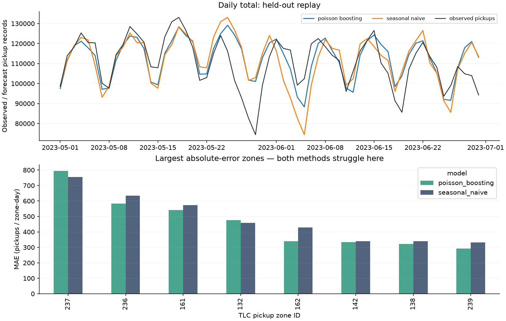

Measured forecasting • public data • reproducible replay
A next-day forecast of observed yellow-taxi pickup records across 263 named zones. A seasonal baseline competes with a modest boosted count model; held-out errors, intervals and a capacity scenario remain visible.
Retrospective replay, not a live dispatch system. Forecasts assume yesterday's completed pickup totals are available. Public TLC files arrive monthly with a delay, so this source cannot drive the same daily workflow in real time. Recorded pickups are not unmet demand.
Dates: 2023-05-01 through 2023-07-01 (end exclusive). Lower MAE/WAPE is better. Interval target: 90%; empirical coverage may differ. All zones and zero-count days stay in the evaluation.
| Method | MAE | WAPE | Coverage | Mean width | Scenario cost units |
|---|---|---|---|---|---|
| seasonal naive | 45.35 | 10.8% | 91.1% | 177.7 | 771,428 |
| poisson boosting | 40.23 | 9.6% | 88.2% | 144.9 | 755,780 |
The allocation scenario uses a fixed daily pool of pickup slots, not cars. Each uncovered pickup costs 1 hypothetical unit; idle capacity costs 0.25. Costs do not represent money, causal impact or achieved savings.

| Month | Method | MAE | WAPE | Coverage |
|---|---|---|---|---|
| 2023-05 | poisson boosting | 39.42 | 9.2% | 88.0% |
| 2023-06 | poisson boosting | 41.07 | 9.9% | 88.4% |
| 2023-05 | seasonal naive | 42.92 | 10.1% | 91.0% |
| 2023-06 | seasonal naive | 47.86 | 11.5% | 91.3% |
Every held-out prediction (CSV) · Metrics, source hashes and splits · Artifact checksums · Code and tests